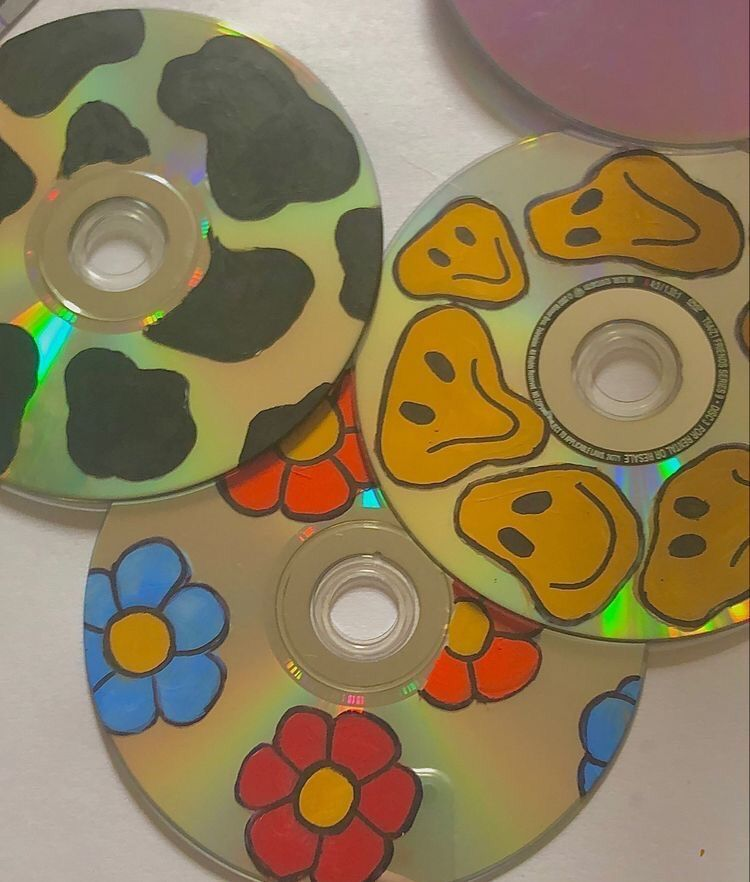
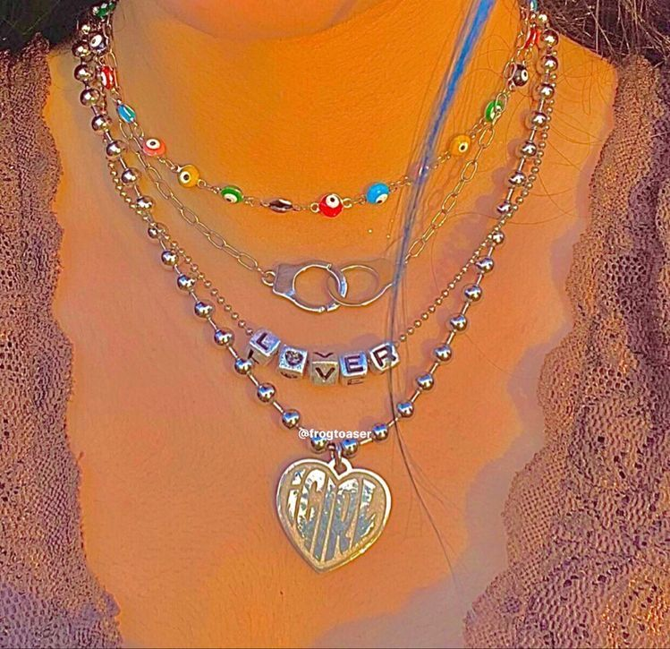

Ce este indiecore?
Estetica indie se bazează pe individualitate și independență. Există două tabere de Indie, deoarece estetica a suferit o renaștere modernă în 2019-2020 etichetată Indie Kid. Indie Kid este un stil luminos, colorat, care implică de obicei blugi supradimensionați, hanorace mari și cămăși mici. |
Elementele: Estetica Indie a fost, în multe privințe, similară cu estetica Pastel, cu toate acestea, culoarea este mai palidă și chiar mai puțin intensă. O altă diferență cheie între cele două este că estetica pastelului transmite un sentiment de inocență și dulceață, estetica Indie transmite mai mult un ton mai întunecat și mai plin de dispoziție. |
Look-ul indiecore presupune: Tricouri cu inscripții, cardigane, blugi, pantofi de tenis, cizme, jachete de piele, haine puffer, Ochelari de soare Rayban, pălării, Puține sau deloc bijuterii, Păr natural și machiaj | |
|  |  |